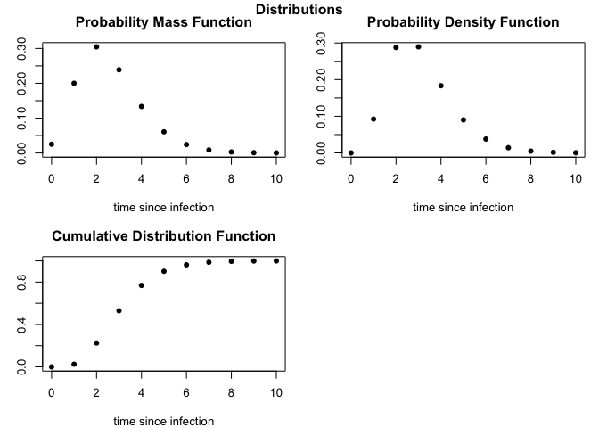

R package with epidemiological parameter distributions for infectious diseases. It includes functions that load delay distributions for a range of pathogens and functions to extract parameters from reported statistics.
Installation
The easiest way to install the development version of epiparameter is to use the devtools package:
Quick start
To view the available distributions, then define the desired function, e.g. to extract and plot the daily probability mass function for the incubation period of influenza H7N9:
# View available distributions
epiparameter::list_distributions(delay_dist = "incubation")
#> pathogen_id study_id year size distribution
#> 1 adenovirus Lessler_etal 2009 14 lnorm
#> 3 ebola WHO_team 2014 500 gamma
#> 5 human_CoV Lessler_etal 2009 13 lnorm
#> 6 influenza_A_seasonal Lessler_etal 2009 122 lnorm
#> 7 influenza_B_seasonal Lessler_etal 2009 76 lnorm
#> 8 influenza_H1N1p Ghani_etal 2009 16 gamma
#> 9 influenza_H1N1p Tuite_etal 2010 316 lnorm
#> 11 influenza_H7N9 Cowling_etal 2013 32 weibull
#> 13 influenza_H5N1 Cowling_etal 2013 27 weibull
#> 15 marburg Pavlin 2014 18 gamma
#> 16 measles Lessler_etal 2009 56 lnorm
#> 17 MERS_CoV Assiri_etal 2013 23 lnorm
#> 20 MERS_CoV Cauchemez_et_al 2014 7 lnorm
#> 21 monkeypox Nolen 2016 16 lnorm
#> 22 monkeypox Thornhill_etal 2022 23 lnorm
#> 24 parainfluenza Lessler_etal 2009 11 lnorm
#> 25 rhinovirus Lessler_etal 2009 28 lnorm
#> 26 RSV Lessler_etal 2009 24 lnorm
#> 27 SARS_CoV Donnelly_etal 2003 57 gamma
#> 29 SARS_CoV Lessler_etal 2009 157 lnorm
#> 33 SARS_CoV_2_wildtype McAloon_etal 2020 1269 lnorm
# Extract incubation period distribution
incubation_H7N9 <- epiparameter::epidist(
pathogen = "influenza_H7N9",
delay_dist = "incubation"
)
# Plot probability distributions
plot(incubation_H7N9)
epiparameter tutorial with applications
For a full explanation of the functions and data stored in the epiparameter package and a few possible applications of the delay distribution data please see the introduction to epiparameter.
Contributing to library of delay distributions
If you would like to contribute to the different delay distributions stored in the epiparameter package, you can access the google sheet and add your data.
Notes on the the spreadsheet:
Most studies will report the distribution(s) they fitted to the data. In the case that the study did not report the distribution of the reported parameters or summary statistics (mean and standard deviation of the distribution) the distribution can be assumed (e.g. by looking at the shape of the distribution from figures in the paper). When a distribution is being assumed and not explicitly stated please add this assumption to the notes section of the spreadsheet. We are only interested in studies that report the distribution fitted to the data. This will ensure that if this data is used in another application the user can be alerted that the distribution is assumed and not known with certainty.
Shape and scale columns are the parameters of the gamma distribution, while meanlog and sdlog columns are the parameters of the lognormal distribution. In some cases these values will not be reported in the study but can be extracted using the
epiparameterfunctionextract_param()using either reported percentiles or median and range (see extraction section)The extracted column refers to whether the distribution parameters are explicitly stated in the paper, in which case the extracted column should be “no”, or are extracted from summary statistics using function in the package, in which case the extracted column is “yes”
Discretised is to indicate whether the study fitted a discrete distribution
Phase_bias means the study adjusted for a either a rising or falling epidemic, which can bias incubation period estimates. Most studies will not adjust for this bias.
If fields are not known from a study, either put “NA” or “not yet checked”. We are also happy to receive papers which report these delay distributions and can add them to the database ourselves.
Help
To report a bug please open an issue
Contribute
Contributions to epiparameter are welcomed. Please follow the package contributing guide.
Code of Conduct
Please note that the epiparameter project is released with a Contributor Code of Conduct. By contributing to this project, you agree to abide by its terms.